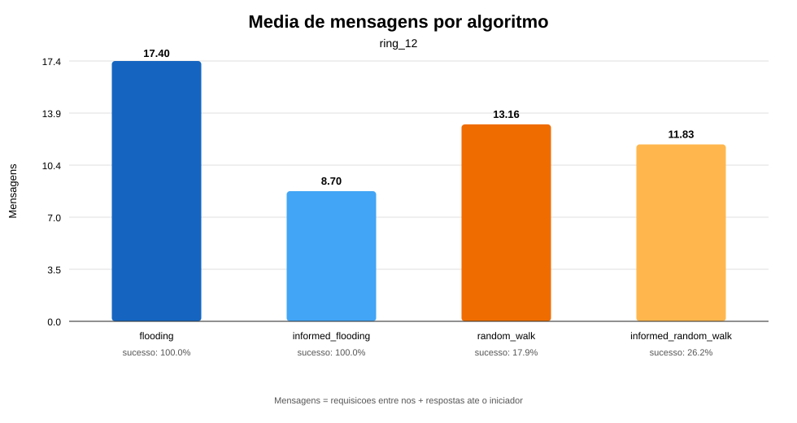
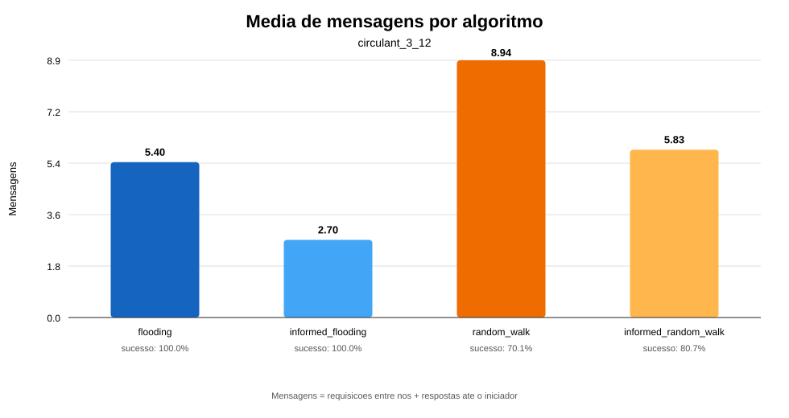
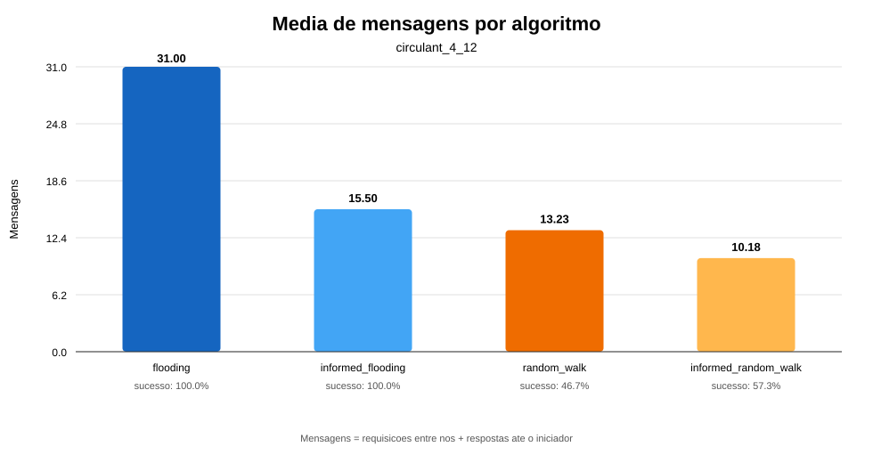

Implementacao de Algoritmos de Busca em Sistemas P2P
Flooding, passeio aleatorio, TTL e busca informada
Computacao Distribuida
Trabalho 7
Python
Equipe
- Leonardo Silva - 2319973
- Ravi Freitas - 2316154
- Luca Solon - 1910486
- Luiz Henrique - 2520528
Objetivo e funcionalidades
Entrada e modelo
- Leitura de redes em JSON ou YAML
- Grafo P2P nao estruturado e nao direcionado
- Recursos locais e cache por no
- Exportacao da topologia em DOT
Execucao e analise
- Quatro algoritmos de busca
- TTL configuravel por operacao
- Mensagens e nos envolvidos
- Shell interativo e benchmark reproduzivel
Validacao da rede
O programa rejeita a configuracao antes de permitir qualquer busca.
- Rede particionada
- Grau abaixo de
min_neighbors
- Grau acima de
max_neighbors
- No sem recurso
- Aresta de um no para ele mesmo
- Arestas duplicadas
- Nos inexistentes em arestas
- Quantidade ou tipos invalidos
python3 -m p2p_search validate examples/ring_12.json
Algoritmos implementados
| Algoritmo | Encaminhamento | Usa cache? |
|---|
| flooding | Todos os vizinhos, com supressao de reenvio | Nao |
| informed_flooding | Flooding ate um no conhecer a localizacao | Sim |
| random_walk | Um vizinho aleatorio por salto | Nao |
| informed_random_walk | Passeio ate recurso ou entrada em cache | Sim |
O passeio pode revisitar nos. O cache e atualizado no caminho da resposta,
mesmo quando a busca executada nao o consulta.
Metricas e metodologia
Contagem
Mensagens totais = consultas encaminhadas + respostas ate o iniciador.
Nos envolvidos = IDs distintos que processaram a busca.
O TTL limita apenas os saltos da consulta.
Experimentos
- 3 topologias com 12 nos
- Graus 2, 3 e 4
- 10 consultas por rodada
- 5 consultas repetidas para aquecer cache
- 100 rodadas e semente 2026
- 1.000 buscas por algoritmo/topologia
Resultados: anel de grau 2

Resultados: circulante de grau 3

Resultados: circulante de grau 4

Analise comparativa
| Topologia | Melhor media | Maior sucesso | Observacao |
|---|
| Grau 2 | Informed flooding: 8,70 | Flooding: 100% | Random walk sofre com distancia |
| Grau 3 | Informed flooding: 2,70 | Flooding: 100% | Melhor equilibrio observado |
| Grau 4 | Informed random: 10,18* | Flooding: 100% | Flooding gera muitas duplicatas |
* Menor media global, mas com 57,3% de sucesso. Informed flooding teve 15,50 e 100%.
- O cache reduziu mensagens e elevou o sucesso das variantes aleatorias.
- Mais vizinhos reduzem distancias, mas podem aumentar o trafego de flooding.
Demonstracao ao vivo
python3 -m p2p_search shell examples/ring_12.json --seed 2026
search n1 r7 6 flooding
cache n1
search n1 r7 6 informed_flooding
Primeira busca
18 mensagens, 12 nos envolvidos e resposta de n7.
Busca repetida
0 mensagens, 1 no envolvido e resposta pelo cache de n1.
Conclusoes
- Flooding apresentou alcance confiavel, com custo sensivel a densidade e ciclos.
- Random walk economiza fan-out, mas depende fortemente do TTL e da topologia.
- Cache local reduz o custo de consultas repetidas e melhora buscas aleatorias.
- Nao existe algoritmo universalmente melhor: custo e sucesso devem ser avaliados juntos.
Codigo, testes, CSVs e graficos sao reproduziveis.